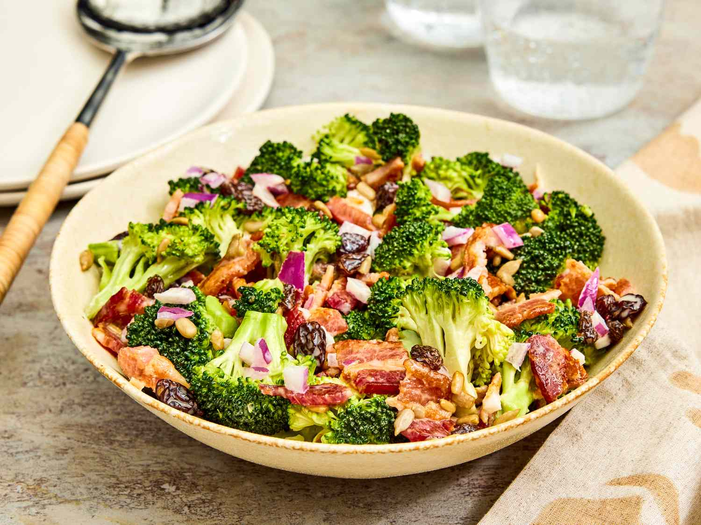

Broccoli Salad

Description
Broccoli salad is a refreshing and versatile dish that combines the crisp
texture of fresh broccoli with a variety of complementary ingredients. At
its core, the salad features raw broccoli florets, which provide a
satisfying crunch and a slightly earthy flavor. These are often paired
with ingredients like shredded carrots, red onions, and dried cranberries
or raisins for a mix of sweetness and tanginess. Some versions also
include crispy bacon bits, sunflower seeds, or chopped nuts for added
texture and richness. The beauty of broccoli salad lies in its
adaptability you can customize it to suit your taste preferences or
dietary needs.
Main Ingredients
-
Broccoli: Fresh broccoli florets, chopped into bite sized pieces (about
4-5 cups).
-
Red Onion: Finely chopped or thinly sliced for a bit of sharpness (about
1/4 cup).
-
Bacon: Cooked until crispy and crumbled (optional, about 4-6 slices).
-
Dried Cranberries or Raisins: For a touch of sweetness (about 1/3 cup).
-
Sunflower Seeds or Chopped Nuts: Adds crunch (almonds, pecans, or
walnuts, about 1/4 cup).
-
Shredded Cheese: Cheddar or your favorite cheese (optional, about 1/2
cup).
Dressing Ingredients
- Mayonnaise: The base of the dressing (about 1/2 cup).
-
Vinegar: Apple cider vinegar or white vinegar for tanginess (about 1-2
tablespoons).
- Sugar or Honey: For a hint of sweetness (about 1-2 tablespoons).
- Salt and Pepper: To taste.
-
Greek Yogurt or Sour Cream: Optional, for a lighter, tangier dressing
(about 1/4 cup).
Optional Add Ins
- Shredded carrots
- Cherry tomatoes (halved)
- Red bell pepper (chopped)
- Feta or blue cheese (for a different flavor profile)
Steps
-
Prepare the Ingredients :
-
Chop the Broccoli:
-
Cut fresh broccoli into small, bite sized florets. You’ll need
about 4-5 cups.
-
If desired, peel and chop the broccoli stems for extra crunch.
-
Cook the Bacon (if using):
-
Fry 4-6 slices of bacon until crispy. Let them cool, then
crumble into small pieces.
-
Chop Additional Ingredients:
- Finely chop 1/4 cup of red onion.
-
If using other add ins (like carrots, nuts, or cheese), prepare
them as well.
-
Make the Dressing :
-
In a small bowl, combine:
- 1/2 cup mayonnaise
- 1-2 tablespoons apple cider vinegar or white vinegar
- 1-2 tablespoons sugar or honey (adjust to taste)
- Salt and pepper to taste
-
Optional: 1/4 cup Greek yogurt or sour cream for a tangier
dressing.
- Whisk the dressing until smooth and well combined.
-
Assemble the Salad :
-
In a large mixing bowl, combine:
- The chopped broccoli florets
- Chopped red onion
- Dried cranberries or raisins (1/3 cup)
- Sunflower seeds or chopped nuts (1/4 cup)
- Crumbled bacon (if using)
- Pour the dressing over the salad ingredients.
-
Mix and Chill :
-
Toss everything together until the broccoli and other ingredients
are evenly coated with the dressing.
-
Cover the salad and refrigerate for at least 1-2 hours to allow the
flavors to meld together.
-
Serve :
- Give the salad a final stir before serving.
-
Optionally, garnish with extra bacon, nuts, or cranberries for
presentation.
- Enjoy your refreshing and crunchy broccoli salad!